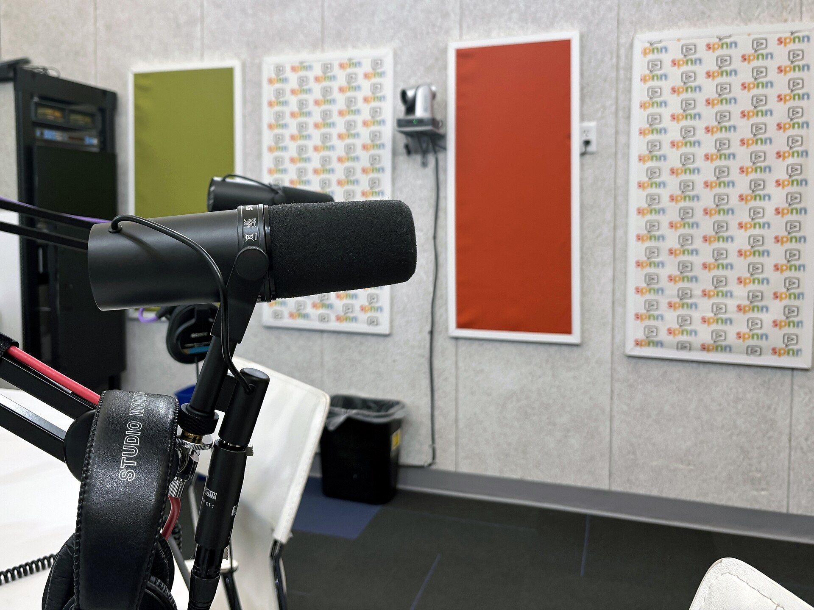
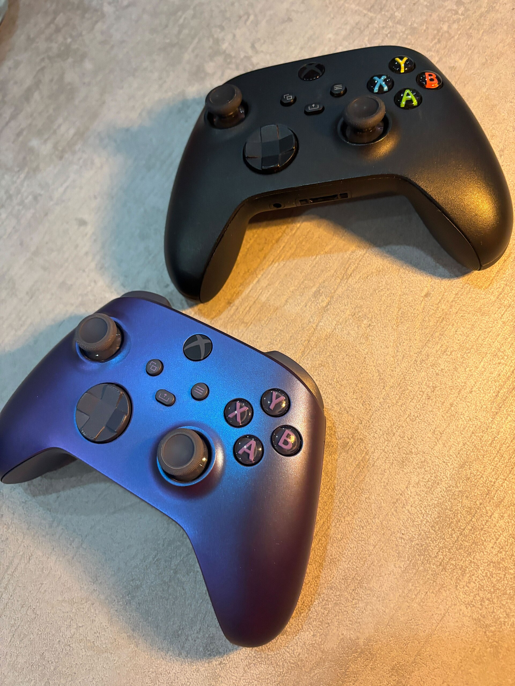

Cut to the frame.
Cutsway is the editing studio for gaming creators, streamers and podcasters.
Book a callHow much comes out?
Every slice off the bar is time your audience never has to sit through. Slide it.
Made by hand, at speed.
Gaming videos
The story found in hours of gameplay. Pacing, captions, sound.
Back in 48 hours
Shorts & reels
Ten vertical clips per session, reframed and captioned.
Back in 24 hours
Podcasts
Three mics, one clean episode, six clips that travel.
Back in 72 hours
Thumbnails & posting
Three thumbnail options, titles, and a schedule on four platforms.
From 8 hours
Questions, answered.
What do I send?
The raw pile: recordings, VODs, facecam. Sorting it is the job.
How many revisions?
Two rounds per edit, as notes on the exact frame.
Will it feel like my channel?
Your editor studies your last ten uploads first and stays with you after.
Are the turnaround times guaranteed?
The times shown are samples. Yours are confirmed on the call.